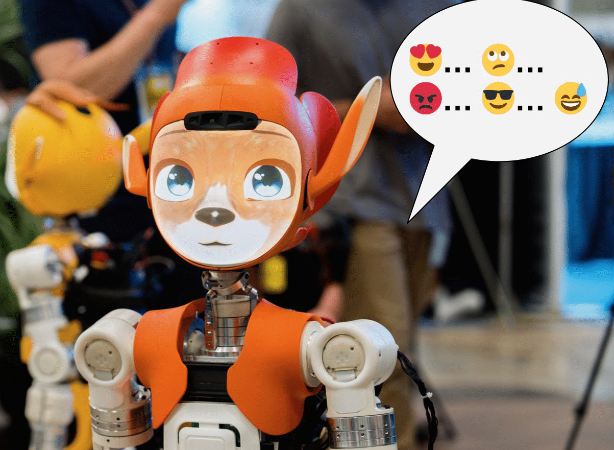

TTS Toolbox

We propose a free, open-source toolbox with documentation that allows social roboticists to use emoji prompting to easily deploy an expressive TTS offline and customize the voices to their own use cases. The toolbox extends Matcha-TTS for ease-of-use by HRI researchers by including: 1) Training files setup: examples, raw data, and 3 checkpoints (with and without optimizers), 2) Additional information on the amount of data needed to fine-tune, 3) Scripts to record the data, 4) Wrappers to parse emojis in text to prompt the voices, and 5) A conversational agent. Our toolbox, data, and voices are available free and open source